Werkinstructie van de fabrikant · Key Systems, Inc.
Tamper-Proof Key Rings®
Specificaties, gereedschap en kleurmarkering

De sleutelring wordt met gereedschap gesloten en verzegeld. Daarna kan de bos niet meer worden geopend zonder dat het zichtbaar is. Er zijn twee uitvoeringen: de massieve RVS keyring en de buigzame Flex keyring van gevlochten staalkabel. Beide zijn ingeslagen met een uniek serienummer.
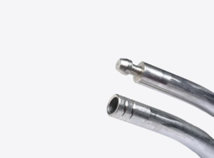
RVS keyring
- Materiaal
- Roestvast staal
- Dikte
- 4 mm, massief rond
| Maat | Binnenø | Bestelcode |
|---|---|---|
| 1″ | 3 cm | KR3 |
| 1⅝″ | 4 cm | KR4 |
| 2″ | 5 cm | KR5 |
| 3″ | 7 cm | KR7 |
| 4″ | 9 cm | KR9 |
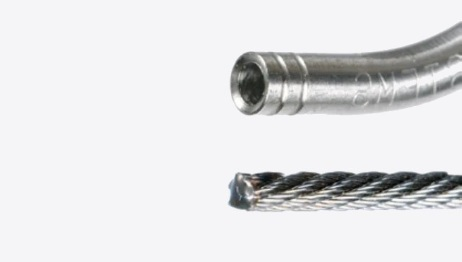
Flex keyring
- Materiaal
- Gevlochten staalkabel
- Dikte
- Kabel 2,6 mm, sluiting 4 mm
| Maat | Binnenø | Bestelcode |
|---|---|---|
| 1″ | 3 cm | Flex KR3 |
| 1⅝″ | 4 cm | Flex KR4 |
| 2″ | 5 cm | Flex KR5 |
| 3″ | 7 cm | Flex KR7 |
| 4″ | 9 cm | Flex KR9 |
Vijf maten, dezelfde sluiting
Alle maten hebben dezelfde verzegelde sluiting en hetzelfde gereedschap. De maat bepaalt alleen hoeveel sleutels erop passen: van veertien aan de kleinste tot zesenzestig aan de grootste. De RVS en de Flex keyring zijn in dezelfde vijf maten leverbaar, dus u kunt per bos kiezen wat past zonder extra gereedschap aan te schaffen.
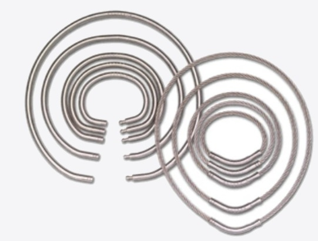
Gereedschap, groeven en kleurmarkering
Gereedschap
De sluittang en de verzegeltang horen bij elkaar: eerst sluiten, dan verzegelen. Voor het openen van een verzegelde ring is een kniptang nodig.
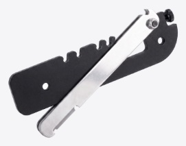
Sluittang
Zet de ring rond. Vijf kerven, één per maat.
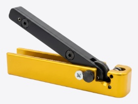
Verzegeltang
Maakt de sluiting onlosmakelijk. Eerste groef.
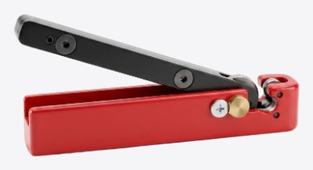
Kniptang
Opent de ring op de tweede groef.
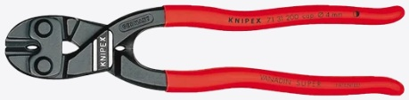
Kniptang Knipex
Knipt op elke plek. Staaldraad tot 4 mm.
De twee groeven
Elke sluiting heeft twee groeven. Welke u gebruikt bepaalt of de ring dichtgaat of opengaat — verwissel ze niet.
Eerste groef
Verzegelen
De groef naast de naad. Gebruik hiervoor de verzegeltang.
Tweede groef
Openen
De groef verder van de naad. Gebruik hiervoor de kniptang.
Kleurmarkering
Losse kleurclips om ringen per gebouw, afdeling of dienst te onderscheiden. Leverbaar in vijf kleuren.
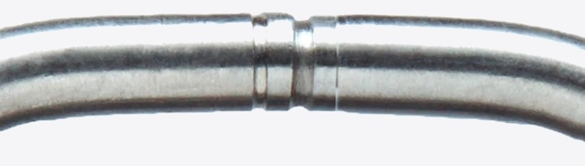
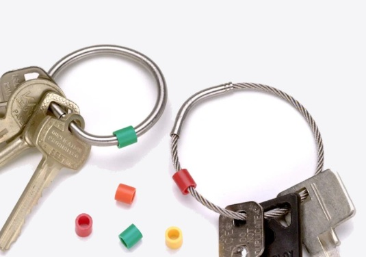
RVS keyring · Ring sluiten
De RVS keyring wordt met drie gereedschappen bewerkt: de sluittang zet de ring rond, de verzegeltang maakt de sluiting onlosmakelijk en de kniptang opent hem weer. Rijg alle sleutels aan de ring vóór het verzegelen — daarna kan er niets meer bij.
Stap 1 – 6
- 1Leg de ring met één zijde in de kerf van de sluittang die bij de maat hoort. De tang heeft vijf kerven, van 1 tot 4 inch (figuur 1).
- 2Leg de andere zijde in de haken aan de voet van de arm. De ring hangt nu gecentreerd in de tang en de sluiting ligt parallel aan het tanglichaam.
- 3Beweeg de arm langzaam terug tot ongeveer 90° en voel de weerstand. Is die te hoog, of blijft er een spleet zichtbaar, verstel dan de stelknop.
- 4Zwaai de arm daarna volledig door, tot ongeveer 120° (figuur 2).
- 5De ring is nu gesloten en de naad is spleetloos (figuur 3 en 4). Zit er toch nog ruimte tussen de uiteinden, draai de stelknop dan een stand verder en herhaal stap 3 en 4.
- 6Laat de ring in de tang zitten en ga verder met verzegelen.
Let op: staat de stelknop te vast en zwaait u de arm alsnog volledig door, dan vervormt de ring. Sluit nooit verder dan nodig.
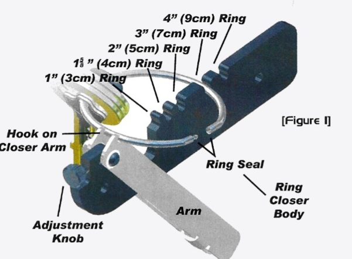
De ring in de sluittang. Benoemd zijn de haak aan de arm, de stelknop, het tanglichaam en de sluiting.
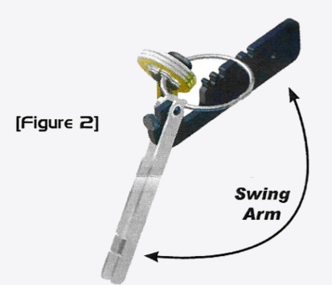
De arm volledig doorgezwaaid, ongeveer 120°.
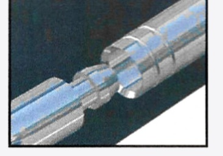
De naad van dichtbij. De uiteinden moeten tegen elkaar liggen, zonder spleet.
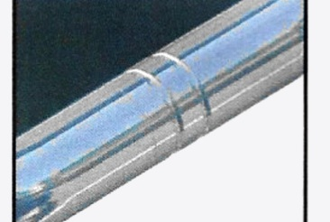
Dezelfde naad, van de andere zijde gezien.
De figuren komen uit de handleiding van de fabrikant en dragen de oorspronkelijke Engelse onderdeelnamen.
RVS keyring · Verzegelen en openen
Stap 7 – 11 · Ring verzegelen
- 7Houd de arm van de sluittang vast. Til met de andere hand de hendel van de verzegeltang op en leg de sluiting in de opening (figuur 5).
- 8Zet de twee wielribben van de tang in de groef die het dichtst bij de naad ligt. Dit is de eerste groef (figuur 6).
- 9Druk de hendel in het tanglichaam (figuur 7) en zwaai de tang minstens drie keer heen en weer over ongeveer 120° (figuur 8).
- 10Til de hendel op om de ring vrij te geven.
- 11Draai de arm van de sluittang terug en neem de ring eruit. Leg het serienummer vast in uw sleuteladministratie.
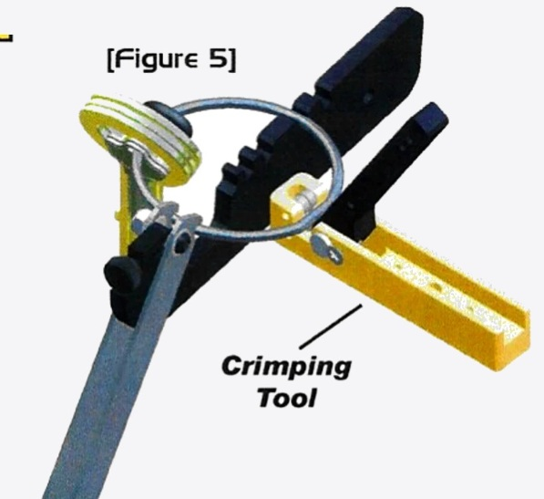
De verzegeltang op de ring, terwijl die in de sluittang blijft zitten.
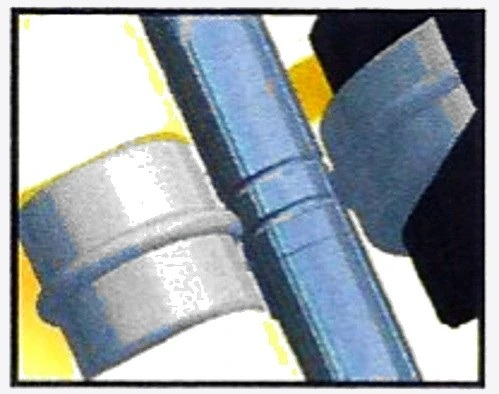
De twee wielribben in de eerste groef, naast de naad.
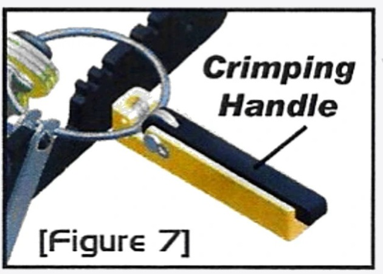
De hendel ingedrukt in het tanglichaam.
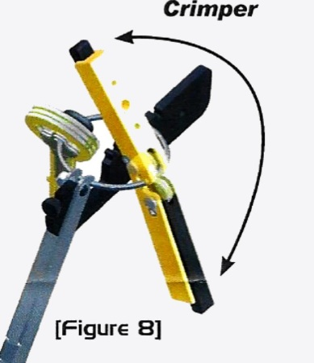
De tang heen en weer zwaaien, minstens 120°.
Stap 12 – 14 · Ring openen
- 12Til de arm van de kniptang op en zet de twee wielribben in de groef die het verst van de naad ligt. Dit is de tweede groef (figuur 10).
- 13Druk de hendel in het tanglichaam.
- 14Zwaai de tang minstens drie keer heen en weer over ongeveer 120°. De sluiting breekt op de tweede groef; de ring is daarna niet opnieuw te gebruiken.
Met de kniptang van Knipex kunt u de ring op elke plek doorknippen, dus ook buiten de groef (figuur 9). Gebruik die als de sluiting niet bereikbaar is.
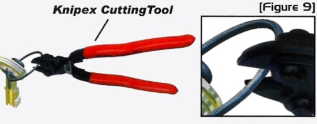
De Knipex kniptang; die knipt op elke plek van de ring.
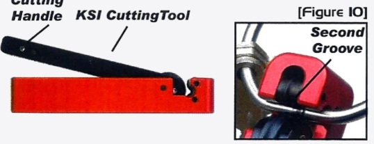
De kniptang op de tweede groef.
Flex keyring · Verzegelen in zeven stappen
De Flex keyring heeft geen sluittang nodig: het gevlochten uiteinde schuift in de holle zijde van de verbinding en wordt daar met de verzegeltang vastgezet. Alleen de verzegeltang en, bij het openen, de kniptang zijn nodig.
- 1Rijg de sleutels en overige middelen aan de ring. Doe dit altijd vóór het verzegelen.
- 2Schuif het vrije uiteinde van de kabel volledig in de holle zijde van de verbinding.
- 3Zet de verzegeltang op de ring, met de wielribben in de groef.
- 4Klem de verbinding in een bankschroef, met de bocht tussen de klembekken, zodat de verbinding niet mee kan draaien.
- 5Zwaai de gesloten verzegeltang drie keer heen en weer over minstens 120°.
- 6De verzegeling is klaar. Neem de tang weg.
- 7Leg het serienummer van de ring vast in uw sleuteladministratie.
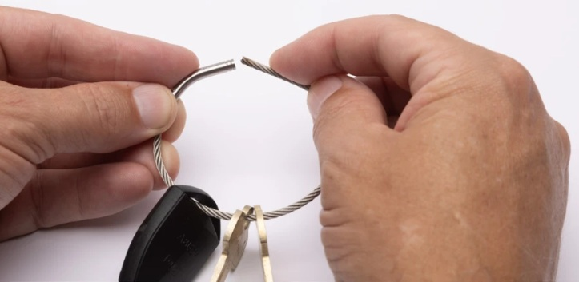
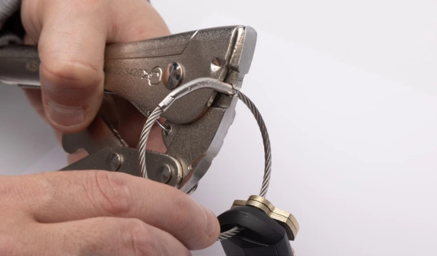
Eindresultaat
De bos zit vast en blijft compleet
De verzegelde huls sluit de ring onlosmakelijk. De sleutels kunnen de volle 360 graden om de ring draaien, zodat ze niet gaan klitten, maar er kan geen sleutel af zonder dat de sluiting wordt beschadigd. Elke ring is ingeslagen met een uniek serienummer, dus u kunt zowel de ring als de eraan hangende sleutels controleren.
Wilt u de ring later openen, gebruik dan de kniptang. Een geopende ring kan niet opnieuw worden verzegeld.
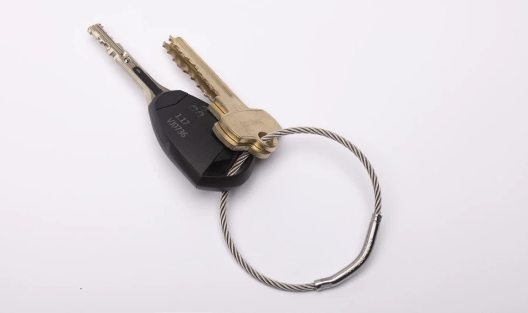
Maten en bestelcodes staan op pagina 1. Onder voorbehoud van wijzigingen.